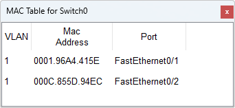

交换机自学习
@Self-learning
- MAC 表内容 Contents
- 交换机通过维护一个 MAC 地址表/转发表来实现链路层数据帧的通信
- 记录各个端口对应设备的 MAC 地址
MAC：连接设备的 MAC 地址
Port：设备连接的端口
Timer：默认老化时间 Aging Time； 思科交换机、华为交换机默认都是 300s；如果一个 MAC 地址条目在 300 秒内没有再次收到来自该 MAC 的报文，交换机就会认为该设备已离线，并将其从表中删除
- 默认情况下，所有的端口都在同一个Vlan： vlan 1
- 核心思想 Thinking
- 交换机每收到一个帧，都做2件事情：先学习，再转发
- 学习：基于源 MAC 地址，建表；MAC 地址对应的设备在哪个口；从哪个端口进来的；根据进入端口建表
- 转发：基于目的 MAC 地址，查表并转发；帧往哪去；根据登记端口转发
- 建表在前，查表在后，不能颠倒；因为本次学习的结果可能直接决定本次转发
-
MAC 地址表里登记的端口，是“该目的 MAC 曾经作为源 MAC 出现过的端口”
- 基本过程 Procedure
- 查表中是否有与接收帧的源 MAC 匹配的表项
如果有 → 更新（刷新端口、老化计时）
如果没有 → 增加一条新表项（学习并建表）
- 判断目的 MAC 的类型（查表）
- 如果是广播帧或组播帧：除入端口外，向同 VLAN 的所有端口泛洪 Flooding 转发出去
- 如果是单播帧，查表中是否有与目的 MAC 匹配的表项
如果没有，是未知单播帧，泛洪 Flooding 到同 VLAN 的其他所有端口
如果有，则比较进入的端口与登记的端口，确定目的主机和源主机是不是在同一侧：
情况1：端口不同，则按照登记的端口转发 Forwarding（核心工作状态）
情况2：端口相同，表明是同一侧的主机，不需要转发，丢弃 Disregarding /过滤 Filtering 该帧
- A → D
- A → B
- E → A
- 答：
- PT中，点击快进“Fast Forward Time”，再查看 MAC 表，条目会消失
- 真实设备使用 show mac address-table aging-time 或 show mac address-table 查看
| MAC | Port | Timer |
| 0001.96A4.415E | FastEhernet0/1 | 300 |


学习：源 A 不在表中，登记 A → 1
转发：单播；查找交换表，目标 D 存在，且登记端口 4 ≠ 入端口 1，按登记端口 4 转发 Forwarding；这是最期望的高效转发
| MAC | Port | Timer |
|---|---|---|
| D | 4 | |
| A | 1 |
学习：源 A 在表中，更新老化时间
转发：目标 B 不存在，泛洪 Flooding 端口2、3、4；B 收到并回复，则登记 B → 2；C、D 则丢弃
| MAC | Port | Timer |
|---|---|---|
| D | 4 | |
| A | 1 | |
| B | 2 |
学习：源 E 不在表中，登记 E → 1
转发：目标 A 存在，且登记端口 1 = 入端口 1，丢弃/过滤 Filtering
| MAC | Port | Timer |
|---|---|---|
| D | 4 | |
| A | 1 | |
| B | 2 | |
| E | 1 |

| 通信方向 | MAC 地址表 | 转发端口 |
|---|---|---|
| A → D | A 1 | 2 3 4 5 6 |
| D → A | A 1
D 4 |
1 |
| E → A | A 1
D 4 E 5 |
1 |
| A → E | A 1
D 4 E 5 |
5 |
Security
- MAC Flapping
- 如果同一个 MAC 地址频繁在不同端口间“出现”，MAC 表会不断更新，可能表明存在环路或攻击
- 交换机通常会告警或启用 STP（生成树协议）来防止环路
选举根桥
确定根端口
选举指定端口
阻塞冗余端口这
- MAC Flooding
- 攻击者发送大量伪造源 MAC 地址的帧，填满交换机的 MAC 表，导致交换机退化为“集线器”模式，对所有流量进行泛洪，从而进行嗅探攻击
- 频繁泛洪会导致网络拥塞

Homework
- Homework
- 答：
- 使用脑图或其它工具，画出交换机自学习的流程图
- 用熟悉的算法设计一个数据结构，实现MAC表的维护过程
get( MacList, f.srcMac ) ? update( MacList, f.srcMac ) : add( MacList, f.srcMac )
// 参考数据结构 Typedef struct{ int desMac; int srcMac; int inPort; int outport; } Frame - Reading
| 动作 | 交换表状态 | 向哪个端口转发 | 说明 |
|---|---|---|---|
| A发送帧给D | |||
| D发送帧给A | |||
| E发送帧给A | |||
| A发送帧给E |
部门之间如何互不影响的通信？
学校规模达到一定阶段后，如何更好的组织网络？
LAN switches completely resolve the problem with collisions. They operate at layer 2 of the OSI model, meaning that they look at the ethernet header and trailer. Their main advantage is that all their ports can operate in full-duplex, meaning they can simultaneously transmit and receive frames on any given port at any given time. Because of this, the media access algorithm for collision detection (CSMA/CD) is no longer required and is disabled by default. Another big advantage of switches is that they forward frames based on MAC addresses, so any given frame doesn't need to be sent to all ports as hubs do.